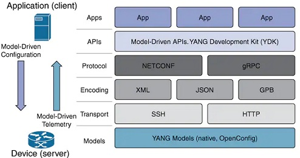

Actualmente muchos dispositivos incorporan tecnologías inteligentes que ayudan a determinar su comportamiento. Esto puede ser tan simple como cuando un dispositivo inteligente reduce su consumo de energía durante períodos de alta demanda o tan complejo como conducir un auto de manera autónoma.
Cada vez que un dispositivo toma una decisión, en función de información externa, dicho dispositivo se conoce como un dispositivo inteligente. (indica que tiene la capacidad para alterar su comportamiento según su entorno).
Para que un dispositivo pueda "pensar" el mismo debe ser programado utilizando herramientas de automatización de red.
IoT: video.
Sistemas IoT
Se considera una arquitectura de red donde el control se desacoplado de la función de reenvio y permitiendo ser programable; facilita la abstracción a las aplicaciones y servicios de la infraestructura base, permitiendo la gestion de la red como una identidad lógica o virtual.
 Arquitectura SDN por ONF
Arquitectura SDN por ONF
La inteligencia de la red es centralizada en controladores SDN basados en software.
Hardware IoT
Dentro de todo proceso de comunicación existen esquemas para interpretar el dato recibido, un formato es un esquema ordenado para entender la información y procesarla; es asi que existen formatos comunes usados en muchas aplicaciones incluidas automatización de la red y programación. Donde destacan YAML (no es un lenguaje de marcado), JSON Notación de objeto de JavaScript y XML (Lenguaje de marcado extensible).
Software IoT
Se entiende como un programa que permite a otras aplicaciones accesar a su información o servicios, donde un conjunto de reglas describen como una aplicación interactua con otra para que esa interacción ocurra. Las APIs pueden distinguirse entre abiertas, internas y de partner
Se tienen hasta 4 tipos de API's para el servicio WEB, como son SOAP, REST, XML-RPC y JSON-RPC; Teniendo a REST como la mas empleada y compatible con diversos formatos.
API REST funciona encima del protocolo HTTP, definiendo un conjunto de funciones que los desarrolladores realizan (solicitudes y respuestas) con HTTP como GET y POST.
Una solicitud de API puede realizarse desde sitios web de desarrolladores, Postman, Python o Sistemas operativos de red.
Herramientas de gestión
Las herramientas utilizan las solicitudes de API RESTful para automatizar tareas y pueden escalar en miles de dispositivos. Entre los beneficios estan el Control de versión de software, Atributos del dispositivo (nombres, direccionamiento y seguridad), Configuración de protocolos o Configuraciones de ACL.
Entre las herramientas mas conocidas estan Ansible, Chef, Puppet y SaltStack; ya que admiten varios formatos de datos.
 Principales herramientas de administración
Principales herramientas de administración
Diseño y simulación
Es un formato que envuelve una serie de tecnologías diferentes para crear contenedores, como Espacios de nombres (Namespaces), Grupos de control (Control Groups), Sistemas de Unión de Archivos (Union File Systems)
Actualmente los mas comun para contenerizar una aplicación es implementarla como un contenedor Docker. Docker es una forma de crear y ejecutar ese contenedor. Un contenedor es una forma de encapsular todo lo que necesita para ejecutar su aplicación, de modo que pueda implementarse fácilmente en una variedad de entornos.Docker. Video.
Diseño y simulación
La programabilidad basada en modelos proporciona un lenguaje de configuración estructurado que podemos entender e incluye soporte para varios modelos (native, OpenConfig e IETF) con una especificación que está desacoplada del transporte, tiene end encoding de protocolo. Emplea APIs basadas en modelos para abstracción y simplificación; aprovechando el código abierto y amplio soporte.
 Pila de programabilidad YANG